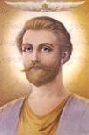
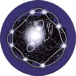
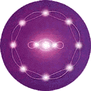

Saint Germain je znám jako pán Sedmého paprsku. Vždy, když se k nìmu
modlíme nám pøináší mnoho darù ducha – svou radost, diplomacii a kreativitu.
Mùže nás inspirovat svými inovacemi ve vìdì, literatuøe, náboženství, øízení,
filosofii, vzdìlání, léèitelství, alchymii a jiných oborech.
 Témìø sedmdesát let nás Saint Germain pøipravuje na vstup
do vìku vodnáøe, vìku míru, svobody a osvícení. Zjevil se Guy
Ballardovi poèátkem tøicátých let a pøedal mu první uèení o
fialovém plameni.
Saint Germain prohlásil, že zkonèily vìky, kdy byla znalost
o fialovém plameni udržována v tajnosti. Mistøi rozhodli uvolnit
tyto znalosti pro veøejnost v této kritické dobì. Saint Germain
øekl, "Použití fialového stravujícího plamene má pro vás a celé lidstvo vìtší cenu,
než všechno bohatství, všechno zlato a drahokamy této planety." (JÁ JSEM :
leden 1941 s.20)
Fialový plamen pracuje tak trochu jako mýdlo. Mýdlo odstraòuje špínu
z vašich šatù tak, že použije pozitivní a negativní náboj atomù. Funguje to
proto, že každá jeho molekula má dvì strany – stranu, která je pøitahována
špínou a stranu, která je pøitahována vodou. Špínu milující strana pøitahuje
špínu stejnì jako magnet pøitahuje sponky na papíry, když je tažen pøes
krabièku, kde sponky leží. Vodu milující strana pøitahuje vodu, která s sebou
špínu odnese.
Když vzýváme fialový plamen, vytvoøí polaritu mezi jádrem atomu a bílým
ohòovým jádrem plamene. Jádro, jakožto hmota, pøedstavuje negativní pól; bílé
ohòové jádro fialového plamene, jakožto Duch, pøedstavuje pozitivní pól.
Interakce mezi jádrem atomu a svìtlem fialového plamene vytváøí oscilaci.
Tato oscilace uvolní hustotu, která je zadržována mezi electrony obíhajícími
jádro. Když je tato zatìžující substance, která zvìtšuje hmotnost atomu
uvolnìna, je vržena do fialového plamene a odnesena.
Na rozdíl od mýdla, fialový plamen jednoduše neobklopí a neodnese
hlušinu; on jí transformuje na èistou svìtelnou energii. Osvobozeny od hlušiny se
elektrony zaènou pohybovat volnìji, což zvyšuje naše vibrace a pohání nás to
ke spirituálnìjšímu stavu bytí.
Lidé pozorují spirituální i fyzický rozdíl, když používají fialový plamen. Ale
co se skuteènì dìje když opakujeme slova prohlášení o fialovém plameni?
Mohu vám na to poskytnout dva pohledy - spirituální pohled tak jak mi byl
pøedán Nanebevzetými Mistry a vìdecký pohled položený na základech
souèasné fyziky a medicíny. Obì vysvìtlení jsou založena na koncepci vibrací.
Z fyzikálního hlediska jsou vibrace rychlost, kterou se nìco pohybuje tam a
zpìt, neboli osciluje. Jak já to chápu, jsou vibrace na spirituální úrovni také spin
elektronù jak se pohybují okolo jádra atomu. Jak je vidìt, nejsou obì definice od
sebe pøíliš vzdálené.
Každý z nás má ètyøi tìla, která tvoøí obaly naší duše: (1) fyzické tìlo,
které vidíme a kterého se mùžeme dotýkat; (2) astrální tìlo, neboli tìlo našich
pøání a tužeb, které obsahuje naše emoce; (3) mentální tìlo, což je naše
vìdomá mysl; a (4) éterické neboli tìlo pamìti, které obsahuje vzpomínky ze
všech našich minulých životù. Fialový plamen pracuje s tìmito ètyømi nižšími
tìly tak, že mìní stupeò jejich vibrací.
Saint Germain nám dal toto prohlášení o fialovém plameni:
"JÁ JSEM bytost fialového plamene!
JÁ JSEM èistota, kterou Bùh žádá!"
(poslechnìte si toto prohlášení v Real Audio formátu v originále)
Když recitujete toto nebo jiné prohlášení fialového plamene, proniká fialový
plamen každou buòkou a atomem vašeho tìla, vaší myslí, vašimi emocemi,
vaším podvìdomím i vašimi vzpomínkami.
Co dìlá fialový plamen, když proniká vašimi atomy? Mistøi dávají
následující vysvìtlení.
Všichni víme, že atomy jsou z vìtší èásti prázdný prostor. Kdyby byl atom
veliký jako basketbalový míè, jeho jádro by stále bylo pøíliš malé, abychom ho
vidìli pouhým zrakem. Pøesto je 99.9 procenta celé hmoty atomu koncentrována
v jádru, a zbylé místo basketbalového míèe je prázdný prostor vyplnìný jenom
elektrony, které mají velmi malou hmotnost. Celý tento prázdný prostor mezi
jádrem atomu a jeho vnìjším okrajem je místo, kde nesoulad a negativní energie
mùže uváznout.
 Na jaderné i molekulární úrovni se tato substance
jeví jako prach, saze, dehet nebo dokonce cement.
Mistøi použili pro pøirovnání nìkoho, kdo vezme kbelík
rozehøátého dehtu a nalije jej do kbelíku plného kulièek.
Prostor mezi kulièkami se zalepuje protékajícím dehtem
a brzy je celá masa zpeèena dohromady.
Mistøi nám øíkají, že jsou-li naše fyzické a naše
spirituální tìla zahlcena negativní energií a karmou, zpomaluje to vibrace elektronù
v našich ètyøech nižších tìlech. My pak zaèínáme rezonovat více s negativitou a
ménì s èistou kosmickou energií, která pøichází z naší Božské a následnì
mùžeme onemocnìt. èím více je této substance v našich ètyøech nižších
telech, tím nižší jsou naše vibrace a tím více jsme zatížení. Ze spirituálního
hlediska je toto dùvod, proè lidé umírají.
Jestliže jste studovali akupunkturu a jógu tak víte, že máme optimální
zdraví jestliže duchovní energie mùže volnì prodit našimi tìli. Jestliže karmické
substance krystalizují, je to jako kornatìní cév našich spirituálních tìl. Jestliže
s touto negativitou rezonujeme, postupnì se jí stáváme ledaže nìco udìláme
abychom se obrátili k lepšímu.
 Fialový plamen pøemìòuje všechno negativní co je
uloženo kdekoli ve vašem spirituálním nebo fyzickém
bytí. To zahrnuje vše od jadérek nenávisti k sobì
samému až po fyzikální viry. Když fialový plamen
zaène pracovat, prochází ucpanými prostory mezi
elektrony a atomovými jádry. Vytìsòuje tyto èásteèky
husté substance vašeho tìla a rozpouští je. Tento
proces pøemìòuje negativní energii na pozitivní a
obnovuje její pøirozenou èistotu. |